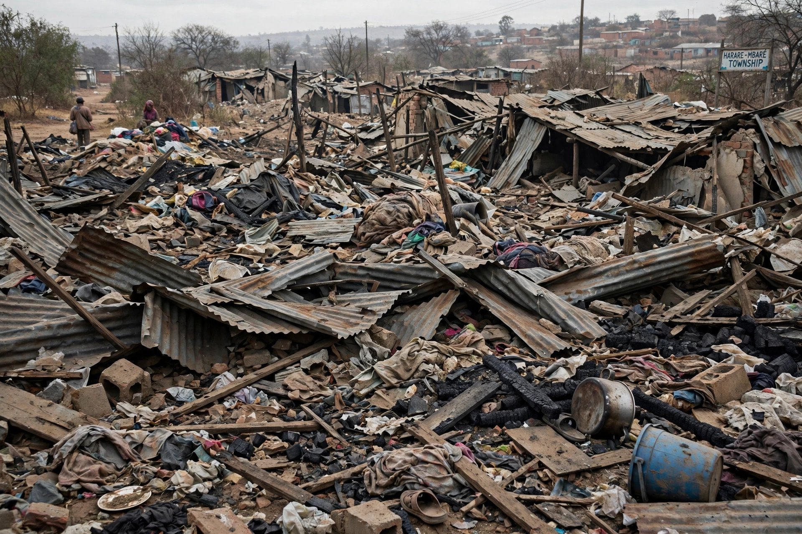

Operation Murambatsvina
| Operation Murambatsvina | |
|---|---|
| Date | 19 May – June 2005 |
| Location | Zimbabwe |
| Meaning | "Drive out the rubbish" (Shona) |
| Displaced | c. 700,000 (UN estimate) |
Operation Murambatsvina (Shona for "drive out the rubbish", also known as Operation Restore Order) was a large-scale government campaign in Zimbabwe in 2005 that involved the demolition of informal settlements, markets and housing across the country. A United Nations report estimated that some 700,000 people lost their homes or livelihoods, or both.

1. Background
2. The operation
3. International response
4. Aftermath
Background
The operation began on 19 May 2005 in Harare, weeks after disputed parliamentary elections. The government of President Robert Mugabe said the demolitions targeted illegal structures and black-market trading in the name of urban renewal.
The operation
Police and youth militia bulldozed or burned informal dwellings and market stalls in high-density suburbs nationwide. Residents were often given little or no warning. Churches and aid agencies reported people sleeping in the open in mid-winter. Critics argued the campaign punished urban voters who had supported the opposition Movement for Democratic Change.
International response
UN envoy Anna Tibaijuka's July 2005 report concluded the operation breached national and international law and called it a disastrous venture carried out with "indifference to human suffering". The African Union and Western governments condemned the demolitions.
Aftermath
The government launched Operation Garikai/Hlalani Kuhle ("Live Well") to rebuild housing, but it delivered only a fraction of the homes destroyed. Many displaced people remained in camps or drifted to rural areas and neighbouring countries.
See also: Robert Mugabe · Zimbabwe · Harare